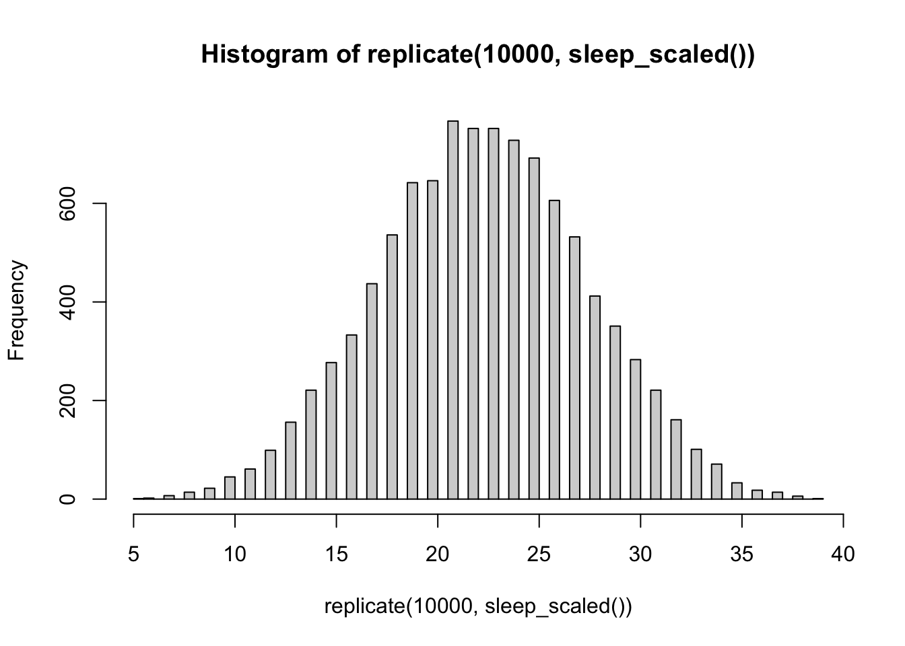

Chapter 15 Shape of Data
One of my fundamental stumbling blocks is understanding the shape of data, even “rectangular data” of the sort that Hadley Wickham refers to in R4DS.
15.1 Making data frames
## # A tibble: 3 x 2
## Symbol Value
## <chr> <int>
## 1 a 1
## 2 b 2
## 3 c 3## # A tibble: 3 x 2
## Symbol Value
## <chr> <int>
## 1 c 4
## 2 d 5
## 3 e 6## # A tibble: 6 x 2
## Symbol Value
## <chr> <int>
## 1 a 1
## 2 b 2
## 3 c 3
## 4 c 4
## 5 d 5
## 6 e 615.2 Gather, spread, pivoting in the tidyverse
The following exercises are based on R4DS.
Several simple data tables are available for practice. Check them out:
## # A tibble: 6 x 4
## country year cases population
## <chr> <int> <int> <int>
## 1 Afghanistan 1999 745 19987071
## 2 Afghanistan 2000 2666 20595360
## 3 Brazil 1999 37737 172006362
## 4 Brazil 2000 80488 174504898
## 5 China 1999 212258 1272915272
## 6 China 2000 213766 1280428583Note that only table 1 is tidy. Tidy rules the day, making cool things possible. For instance:
## # A tibble: 2 x 2
## year n
## <int> <int>
## 1 1999 250740
## 2 2000 296920## # A tibble: 2 x 2
## year n
## <int> <int>
## 1 1999 3
## 2 2000 3# BTW, note the difference between the above count and this one:
table1 %>%
group_by(year) %>%
count(cases)## # A tibble: 6 x 3
## # Groups: year [2]
## year cases n
## <int> <int> <int>
## 1 1999 745 1
## 2 1999 37737 1
## 3 1999 212258 1
## 4 2000 2666 1
## 5 2000 80488 1
## 6 2000 213766 1# Or the following group and summarize:
table1 %>%
group_by(year) %>%
summarise(AggCases = sum(cases))## `summarise()` ungrouping output (override with `.groups` argument)## # A tibble: 2 x 2
## year AggCases
## <int> <int>
## 1 1999 250740
## 2 2000 296920# Or the following plot (I couldn't help but embellish this with a fct_reorder--vital to ggplot/geom_line displays,but a trick that I always forget):
table1 %>%
mutate(country = fct_reorder(country, -population)) %>%
ggplot(aes(year, cases)) +
geom_line(aes(group = country), colour = "grey50") +
geom_point(aes(colour = country))
An aside on count() and tally(): tally() is a convenient wrapper for summarise that will either call n() or sum(n) depending on whether you’re tallying for the first time, or re-tallying. count() is similar but calls group_by() before and ungroup() after. If the data is already grouped, count() adds an additional group that is removed afterwards.
Tidy data is not space-efficient, though. Note how values are reduplicated. This is not an issue in small datasets, but can be a bummer if datasets get large or human data entry is necessary–manually entering demographics is always error-prone.
Table 2 on the other hand contains 2 sorts of data in the count column–cases and population. Not only is this less efficient than table 1, it is much more verbose.
## # A tibble: 12 x 4
## country year type count
## <chr> <int> <chr> <int>
## 1 Afghanistan 1999 cases 745
## 2 Afghanistan 1999 population 19987071
## 3 Afghanistan 2000 cases 2666
## 4 Afghanistan 2000 population 20595360
## 5 Brazil 1999 cases 37737
## 6 Brazil 1999 population 172006362
## 7 Brazil 2000 cases 80488
## 8 Brazil 2000 population 174504898
## 9 China 1999 cases 212258
## 10 China 1999 population 1272915272
## 11 China 2000 cases 213766
## 12 China 2000 population 1280428583Table 3 contains unnecessary internal structure. I combines two values into one field. Kudos for transparency, but little is actually gained by doing this, and it complicates analyses. Best to break them apart.
## # A tibble: 6 x 3
## country year rate
## * <chr> <int> <chr>
## 1 Afghanistan 1999 745/19987071
## 2 Afghanistan 2000 2666/20595360
## 3 Brazil 1999 37737/172006362
## 4 Brazil 2000 80488/174504898
## 5 China 1999 212258/1272915272
## 6 China 2000 213766/1280428583Tables 4a and 4b break data into separate structures when a single table would suffice. Many database tables will be arranged like this. However, to perform calculations on data from each table, it can be better to weld the tables into a single structure.
## # A tibble: 3 x 3
## country `1999` `2000`
## * <chr> <int> <int>
## 1 Afghanistan 745 2666
## 2 Brazil 37737 80488
## 3 China 212258 213766## # A tibble: 3 x 3
## country `1999` `2000`
## * <chr> <int> <int>
## 1 Afghanistan 19987071 20595360
## 2 Brazil 172006362 174504898
## 3 China 1272915272 128042858315.3 Gathering steam…
Table 4a has a key field–the year–and a value field–cases. To bring the key down into the table, we gather it:
## # A tibble: 3 x 3
## country `1999` `2000`
## * <chr> <int> <int>
## 1 Afghanistan 745 2666
## 2 Brazil 37737 80488
## 3 China 212258 213766## # A tibble: 6 x 3
## country year cases
## <chr> <chr> <int>
## 1 Afghanistan 1999 745
## 2 Brazil 1999 37737
## 3 China 1999 212258
## 4 Afghanistan 2000 2666
## 5 Brazil 2000 80488
## 6 China 2000 213766Note that we replace column names that should be data fields with a key (in this example we call it “year”), and the corresponding data held in table4a with a value (in this example “cases”).
The same thing can be done with 4b, except now the value is population.
## # A tibble: 3 x 3
## country `1999` `2000`
## * <chr> <int> <int>
## 1 Afghanistan 19987071 20595360
## 2 Brazil 172006362 174504898
## 3 China 1272915272 1280428583## # A tibble: 6 x 3
## country year population
## <chr> <chr> <int>
## 1 Afghanistan 1999 19987071
## 2 Brazil 1999 172006362
## 3 China 1999 1272915272
## 4 Afghanistan 2000 20595360
## 5 Brazil 2000 174504898
## 6 China 2000 1280428583Note that we get new key and value columns and the gathered columns are dropped. This has the effect of gathering them down into more rows.
It should be noted that many examples of gathering are not written in this way. By default, the key and value simply dropped into the correct part of the gather(). Columns that are not part of the gather are then exempted by negation.
## # A tibble: 6 x 3
## country year cases
## <chr> <chr> <int>
## 1 Afghanistan 1999 19987071
## 2 Brazil 1999 172006362
## 3 China 1999 1272915272
## 4 Afghanistan 2000 20595360
## 5 Brazil 2000 174504898
## 6 China 2000 1280428583David Robinson has even shown examples where he simply uses gather(key, value, -exemptedColumn) (see his YouTube at https://www.youtube.com/watch?v=KzRP40PzopY).
The two new tidy tables are joined as follows:
## Joining, by = c("country", "year")## # A tibble: 6 x 4
## country year cases population
## <chr> <chr> <int> <int>
## 1 Afghanistan 1999 745 19987071
## 2 Brazil 1999 37737 172006362
## 3 China 1999 212258 1272915272
## 4 Afghanistan 2000 2666 20595360
## 5 Brazil 2000 80488 174504898
## 6 China 2000 213766 1280428583David Robinson shows in this bit https://www.youtube.com/watch?v=KzRP40PzopY (about 8m 30s into the YouTube) that you don’t need to make the key and value explicit, and also that you can exempt some columns from the process.
15.4 Spread your wings
So spread is the opposite of gather. Consider Table 2.
## # A tibble: 12 x 4
## country year type count
## <chr> <int> <chr> <int>
## 1 Afghanistan 1999 cases 745
## 2 Afghanistan 1999 population 19987071
## 3 Afghanistan 2000 cases 2666
## 4 Afghanistan 2000 population 20595360
## 5 Brazil 1999 cases 37737
## 6 Brazil 1999 population 172006362
## 7 Brazil 2000 cases 80488
## 8 Brazil 2000 population 174504898
## 9 China 1999 cases 212258
## 10 China 1999 population 1272915272
## 11 China 2000 cases 213766
## 12 China 2000 population 1280428583Now our task is to spread cases and population from the type column into their own columns. In table2 the type column should be distributed into variable with their own columns. Note that this has the effect of spreading table into more columns.
## # A tibble: 6 x 4
## country year cases population
## <chr> <int> <int> <int>
## 1 Afghanistan 1999 745 19987071
## 2 Afghanistan 2000 2666 20595360
## 3 Brazil 1999 37737 172006362
## 4 Brazil 2000 80488 174504898
## 5 China 1999 212258 1272915272
## 6 China 2000 213766 1280428583Hadley provides an interesting example that shows how gather and spread are NOT perfect compliments.
stocks <- tibble(
year = c(2015, 2015, 2016, 2016),
half = c( 1, 2, 1, 2),
return = c(1.88, 0.59, 0.92, 0.17)
)
stocks## # A tibble: 4 x 3
## year half return
## <dbl> <dbl> <dbl>
## 1 2015 1 1.88
## 2 2015 2 0.59
## 3 2016 1 0.92
## 4 2016 2 0.17## # A tibble: 4 x 3
## half year return
## <dbl> <chr> <dbl>
## 1 1 2015 1.88
## 2 2 2015 0.59
## 3 1 2016 0.92
## 4 2 2016 0.17Note how the correct columns are in place, but the year column is now character data.
15.5 Missing Data: Ich vemisse Dich!
Hadley provides a different stock example:
stocks <- tibble(
year = c(2015, 2015, 2015, 2015, 2016, 2016, 2016),
qtr = c( 1, 2, 3, 4, 2, 3, 4),
return = c(1.88, 0.59, 0.35, NA, 0.92, 0.17, 2.66)
)
stocks## # A tibble: 7 x 3
## year qtr return
## <dbl> <dbl> <dbl>
## 1 2015 1 1.88
## 2 2015 2 0.59
## 3 2015 3 0.35
## 4 2015 4 NA
## 5 2016 2 0.92
## 6 2016 3 0.17
## 7 2016 4 2.66Hadley points out that 2 data points are missing in this data set: one explicit and one implicit.
One way to think about the difference is with this Zen-like koan: An explicit missing value is the presence of an absence; an implicit missing value is the absence of a presence.
The implicitly missing value here can be made explicit by spreading the years.
## # A tibble: 4 x 3
## qtr `2015` `2016`
## <dbl> <dbl> <dbl>
## 1 1 1.88 NA
## 2 2 0.59 0.92
## 3 3 0.35 0.17
## 4 4 NA 2.66Note exactly how this works: the rows are now determined by qtr. The 2015 4th quarter value, explicitly NA before, remains NA. Now, however, when 2016 is spread as a variable, the gap in quarter 1 is revealed.
These NA’s can be removed by gathering the data back up using na.rm = TRUE.
## # A tibble: 6 x 3
## qtr year return
## <dbl> <chr> <dbl>
## 1 1 2015 1.88
## 2 2 2015 0.59
## 3 3 2015 0.35
## 4 2 2016 0.92
## 5 3 2016 0.17
## 6 4 2016 2.6615.5.1 You complete(me)
The complete() function is also an important way to make missing values explicit.
< complete() takes a set of columns, and finds all unique combinations. It then ensures the original dataset contains all those values, filling in explicit NAs where necessary
## # A tibble: 7 x 3
## year qtr return
## <dbl> <dbl> <dbl>
## 1 2015 1 1.88
## 2 2015 2 0.59
## 3 2015 3 0.35
## 4 2015 4 NA
## 5 2016 2 0.92
## 6 2016 3 0.17
## 7 2016 4 2.66## # A tibble: 8 x 3
## year qtr return
## <dbl> <dbl> <dbl>
## 1 2015 1 1.88
## 2 2015 2 0.59
## 3 2015 3 0.35
## 4 2015 4 NA
## 5 2016 1 NA
## 6 2016 2 0.92
## 7 2016 3 0.17
## 8 2016 4 2.6615.5.2 fill(ing) in the gaps
While complete() can make explicit the missing values, fill() lets you address a particular type of missing value. Here, the last observation is carried forward. This is very common in data sets.
treatment <- tribble(
~ person, ~ treatment, ~response,
"Derrick Whitmore", 1, 7,
NA, 2, 10,
NA, 3, 9,
"Katherine Burke", 1, 4
)
treatment## # A tibble: 4 x 3
## person treatment response
## <chr> <dbl> <dbl>
## 1 Derrick Whitmore 1 7
## 2 <NA> 2 10
## 3 <NA> 3 9
## 4 Katherine Burke 1 4## # A tibble: 4 x 3
## person treatment response
## <chr> <dbl> <dbl>
## 1 Derrick Whitmore 1 7
## 2 Derrick Whitmore 2 10
## 3 Derrick Whitmore 3 9
## 4 Katherine Burke 1 415.6 Pivoting to something new
These are great exercises, but gather() and spread() are being upgraded to pivot_longer() and pivot_wider(). See https://www.r-bloggers.com/data-pivoting-with-tidyr/
## # A tibble: 3 x 3
## country `1999` `2000`
## * <chr> <int> <int>
## 1 Afghanistan 745 2666
## 2 Brazil 37737 80488
## 3 China 212258 213766table4a_long <- table4a %>%
pivot_longer(
`1999`:`2000`,
names_to = "year",
values_to = "value"
)
table4a_long## # A tibble: 6 x 3
## country year value
## <chr> <chr> <int>
## 1 Afghanistan 1999 745
## 2 Afghanistan 2000 2666
## 3 Brazil 1999 37737
## 4 Brazil 2000 80488
## 5 China 1999 212258
## 6 China 2000 213766table4b_long <- table4b %>%
pivot_longer(
`1999`:`2000`,
names_to = "year",
values_to = "value"
)
table4b_long## # A tibble: 6 x 3
## country year value
## <chr> <chr> <int>
## 1 Afghanistan 1999 19987071
## 2 Afghanistan 2000 20595360
## 3 Brazil 1999 172006362
## 4 Brazil 2000 174504898
## 5 China 1999 1272915272
## 6 China 2000 1280428583This is presumably reversible.
## # A tibble: 3 x 3
## country `1999` `2000`
## <chr> <int> <int>
## 1 Afghanistan 745 2666
## 2 Brazil 37737 80488
## 3 China 212258 213766## # A tibble: 3 x 3
## country `1999` `2000`
## * <chr> <int> <int>
## 1 Afghanistan 745 2666
## 2 Brazil 37737 80488
## 3 China 212258 213766So they are the same.
Table 2 can also be spread()… ahem, pivot_wider()ed.
## # A tibble: 12 x 4
## country year type count
## <chr> <int> <chr> <int>
## 1 Afghanistan 1999 cases 745
## 2 Afghanistan 1999 population 19987071
## 3 Afghanistan 2000 cases 2666
## 4 Afghanistan 2000 population 20595360
## 5 Brazil 1999 cases 37737
## 6 Brazil 1999 population 172006362
## 7 Brazil 2000 cases 80488
## 8 Brazil 2000 population 174504898
## 9 China 1999 cases 212258
## 10 China 1999 population 1272915272
## 11 China 2000 cases 213766
## 12 China 2000 population 1280428583## # A tibble: 3 x 5
## country `1999_cases` `1999_population` `2000_cases` `2000_population`
## <chr> <int> <int> <int> <int>
## 1 Afghanistan 745 19987071 2666 20595360
## 2 Brazil 37737 172006362 80488 174504898
## 3 China 212258 1272915272 213766 1280428583Note that, names_from can come from multiple columns. When there are multiple names_from or values_from columns, names_sep will be used to join values together to form column names.